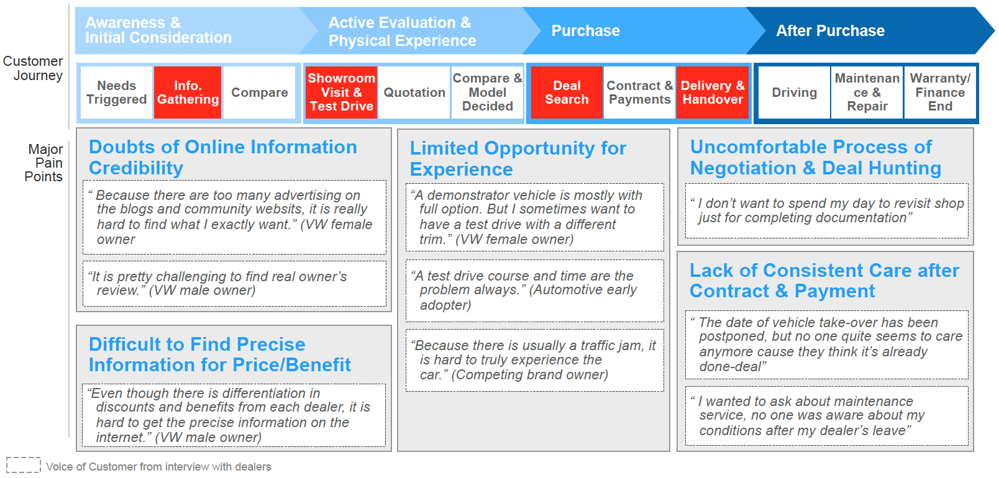
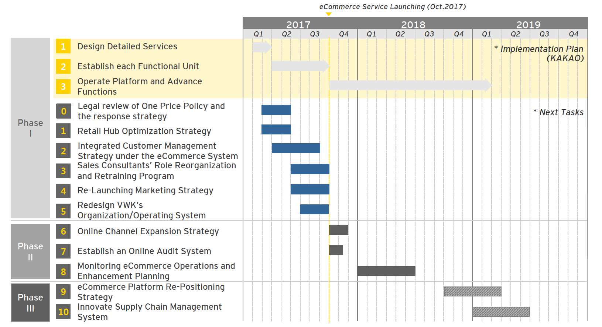

Date
Mar - Jul 2017
(5 months)
Industry
Automotive Industry
Client
Audi Volkswagen Korea Ltd.
(PMO: EY (Ernst & Young))
Problem
- Difficult in defining the R&R between two big companies in order to make a partnership with KakaoTalk
- The sales team, the finance team, and the marketing team all look at the project from their point of view, so it's difficult to get everyone's consent in it
Volkswagen Korea eCommerce implementation strategy
Overview
We defined the To-Be Business Process by establishing the direction for improvement as strengthening Lead Generation, increasing convenience of the contracting process and strengthening customer care.
My Roles
- Identified customers’ major pain points by studying current purchase journey
- Presenting a break through car shopping experience by eCommerce with Kakao, the leading O2O mobility service provider, supported by key sales policies
- Established 4 stage with 24 events along the customer journey through shopping & owning a vehicle and gathered front features/contents & platform operation requirements
- Benchmarked the competitors; Cars.com, True Car, Autotrader etc
- Interviewed the sales staffs of 4 diffrent branches and found the meaningful results
Work Process
1. Business Analysis
1-1. Business Analysis
- Review VW’s Strategic Direction
- Analysis of Current Business Issues
- Analysis of AS-IS Customer Journey
- Benchmarking
2. To-be Design and Modeling
2-1. To-be Process Design
- Derive the Improvement Direction (Process Impact Analysis)
- Draw up Changeable Factors on eCommerce Platform
- Draw up Future Customer Journey
- Benchmarking
- Draw up the Major Service and Sub-functions
- Define R&R between eRetailer and VWK
- Phased Roadmap
- Define Next-Task
Result
[Customer Journey painpoints]
[Project Roadmap]
